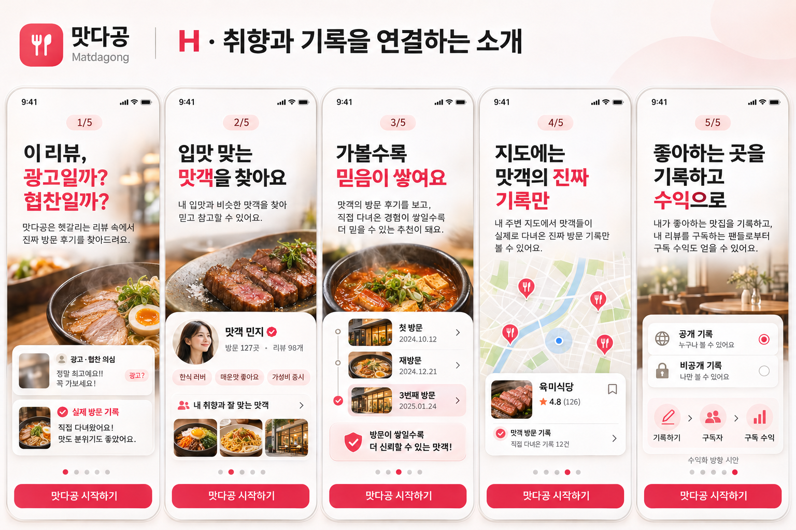

인트로 시안 A–F
각 안은 5페이지 전체 흐름입니다
시안마다 가입 후 소개 화면 1/5부터 5/5까지를 순서대로 담았습니다. A는 기존에 골라 둔 방향을 전체 페이지로 다시 구성했고, B–F는 서비스 강점을 달리 잡은 간결한 대안입니다. 이미지를 누르면 원본 크기로 볼 수 있습니다. A 흐름의 글꼴·상단 아이콘 5가지 비교안 보기 실제 글꼴 비교표 보기





각 보드는 흐름과 시각 방향을 검토하기 위한 컨셉 시안입니다. 이미지 안의 식당·사용자·수치는 예시입니다. 특히 E는 구독 기반
수익화 방향을 시각화한 컨셉이며, 현재 유료 구독·정산 기능이 운영 중이라는 뜻은 아닙니다. 앱에 반영하기 전 기능 상태와 카피를
확인합니다. G–K는 A의 핵심 문구와 메시지 순서를 유지하고 F에 가까운 사진·앱 UI 스타일로 시각 변형한 추가안입니다. 이전 한 장짜리
탐색 이미지는 intro/single-page-explorations/에 참고용으로 보관했습니다.